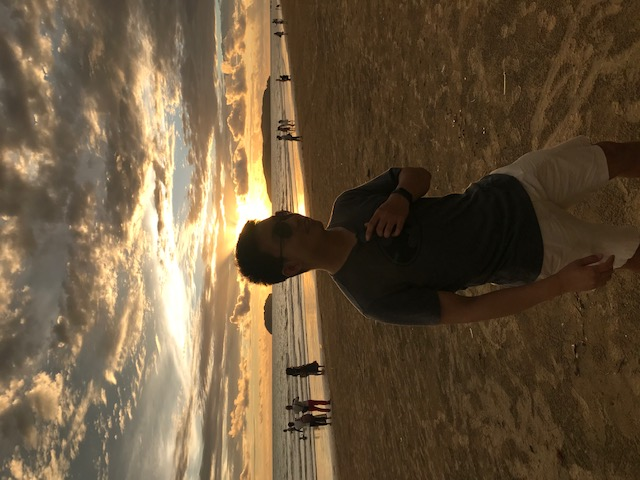

Xuyang CaoPhD Candidate
Beijing Jiaotong University, China |
 |
Xuyang Cao is a third year Ph.D. candidate in Beijing Jiaotong University. His research area include Medical Image Analysis and Machine Learning. He is interested in image segmentation algorithms using both traditional and deep learning based methods.
His current research is to use deep learning techniques to segment medical images in both supervised and semi-supervised manner.
| Xiaomeng Li, Lequan Yu, Chi-Wing Fu, Pheng-Ann Heng. "Deeply supervised rotation equivariant network for lesion segmentation in dermoscopy images" International Skin Imaging Collaboration (ISIC) Skin Image Analysis Workshop of MICCAI 2018. (Oral)
[paper] |